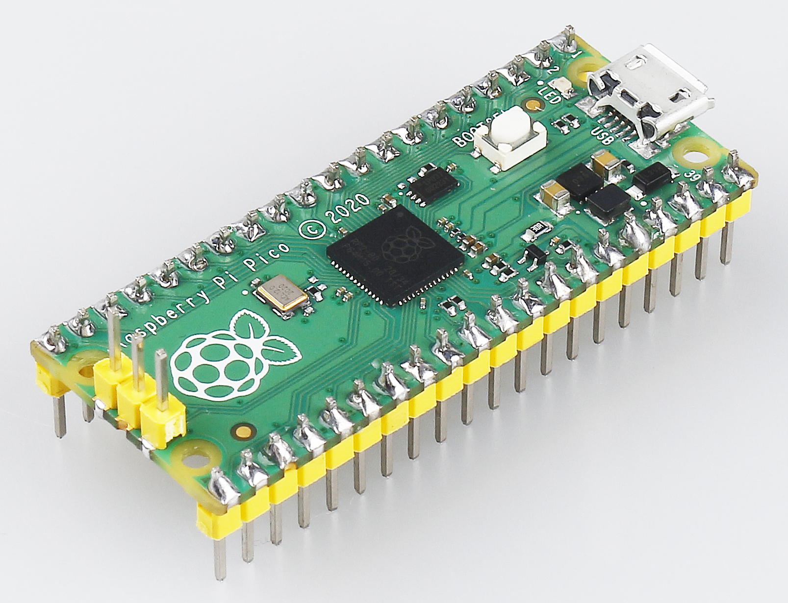

Note
Hello, welcome to the SunFounder Raspberry Pi & Arduino & ESP32 Enthusiasts Community on Facebook! Dive deeper into Raspberry Pi, Arduino, and ESP32 with fellow enthusiasts.
Why Join?
Expert Support: Solve post-sale issues and technical challenges with help from our community and team.
Learn & Share: Exchange tips and tutorials to enhance your skills.
Exclusive Previews: Get early access to new product announcements and sneak peeks.
Special Discounts: Enjoy exclusive discounts on our newest products.
Festive Promotions and Giveaways: Take part in giveaways and holiday promotions.
👉 Ready to explore and create with us? Click [here] and join today!
Introduction to Raspberry Pi Pico¶

The Raspberry Pi Pico is a microcontroller board based on the Raspberry Pi RP2040 microcontroller chip.
With Raspberry Pi Pico, you can learn MicroPython programming, take your first step into physical computing, or build a hardware project. This amazing community - will support you every step of the way. In the project, it can control anything, from LEDs and buttons to sensors, motors, and even other microcontrollers.
Features¶
21 mm × 51 mm form factor
RP2040 microcontroller chip designed by Raspberry Pi in the UK
Dual-core Arm Cortex-M0+ processor, flexible clock running up to 133 MHz
264KB on-chip SRAM
2MB on-board QSPI Flash
26 multifunction GPIO pins, including 3 analog inputs
2 × UART, 2 × SPI controllers, 2 × I2C controllers, 16 × PWM channels
1 × USB 1.1 controller and PHY, with host and device support
8 × Programmable I/O (PIO) state machines for custom peripheral support
Supported input power 1.8–5.5V DC
Operating temperature -20°C to +85°C
Castellated module allows soldering direct to carrier boards
Drag-and-drop programming using mass storage over USB
Low-power sleep and dormant modes
Accurate on-chip clock
Temperature sensor
Accelerated integer and floating-point libraries on-chip
Pico’s Pins¶

Name |
Description |
Function |
|---|---|---|
GP0-GP28 |
General-purpose input/output pins |
Act as either input or output and have no fixed purpose of their own |
GND |
0 volts ground |
Several GND pins around Pico to make wiring easier. |
RUN |
Enables or diables your Pico |
Start and stop your Pico from another microcontroller. |
GPxx_ADCx |
General-purpose input/output or analog input |
Used as an analog input as well as a digital input or output – but not both at the same time. |
ADC_VREF |
Analog-to-digital converter (ADC) voltage reference |
A special input pin which sets a reference voltage for any analog inputs. |
AGND |
Analog-to-digital converter (ADC) 0 volts ground |
A special ground connection for use with the ADC_VREF pin. |
3V3(O) |
3.3 volts power |
A source of 3.3V power, the same voltage your Pico runs at internally, generated from the VSYS input. |
3v3(E) |
Enables or disables the power |
Switch on or off the 3V3(O) power, can also switches your Pico off. |
VSYS |
2-5 volts power |
A pin directly connected to your Pico’s internal power supply, which cannot be switched off without also switching Pico off. |
VBUS |
5 volts power |
A source of 5 V power taken from your Pico’s micro USB port, and used to power hardware which needs more than 3.3 V. |
The best place to find everything you need to get started with your Raspberry Pi Pico is here
Or you can click on the links below: